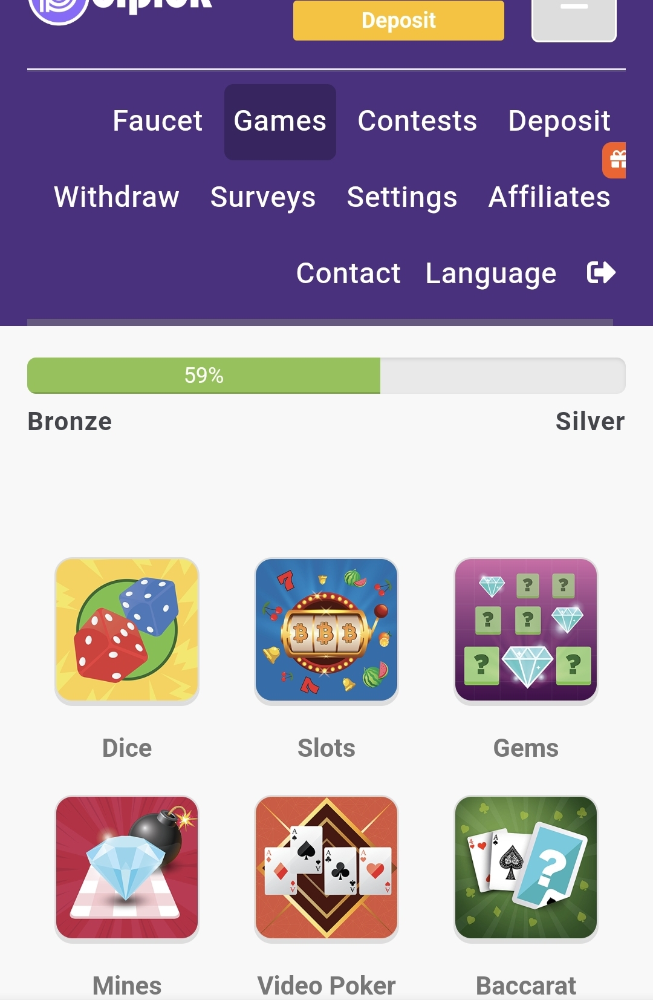
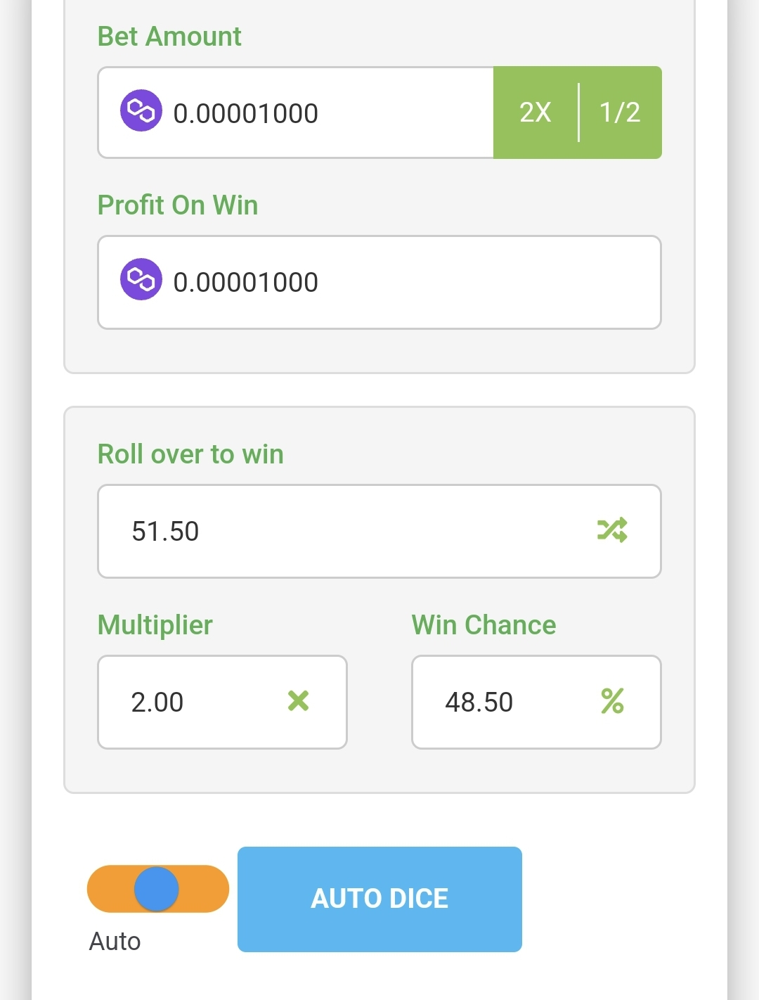
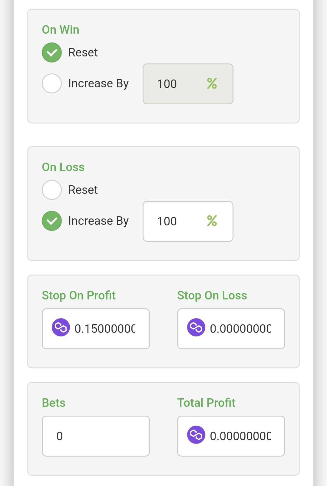

Hier erfährst du, wie du mit dem Dice-Spiel auf Polpick dein Guthaben vermehren kannst.
Logge dich bei Polpick ein und navigiere zum Menüpunkt "Dice".
Wähle einen niedrigen Start-Einsatz. Aktiviere danach die Funktion "Auto Dice", um das Spiel automatisch ablaufen zu lassen.
Setze die Funktion so, dass dein Einsatz nach jeder verlorenen Runde verdoppelt wird. Stelle außerdem den "Stop on Profit" Wert auf das 15.000-fache deines Einsatzes.
Achte darauf, dass dein gesamtes Guthaben nicht mehr als das 15.000-fache deines Einsatzes beträgt und dass du maximal einmal pro Tag spielst.
Für ein sicheres Spiel solltest du auf deiner Plattform mindestens das 1.050.000-fache deines Einsatzes besitzen.
